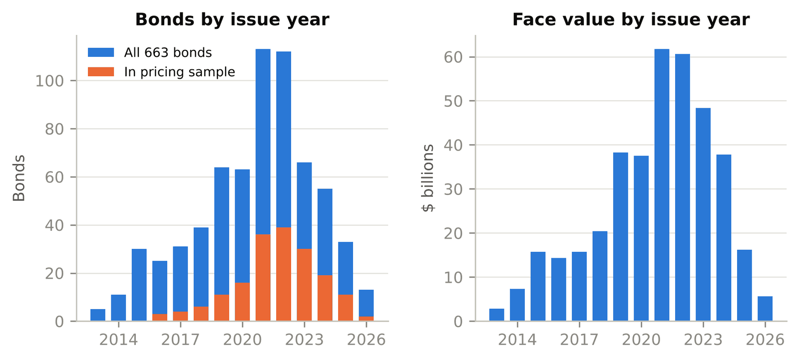
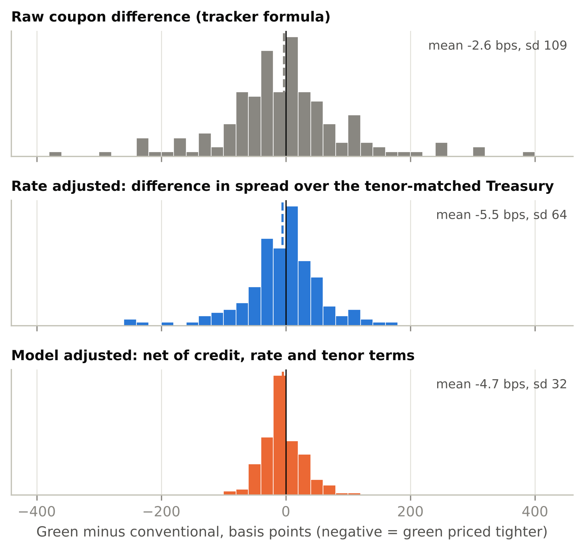
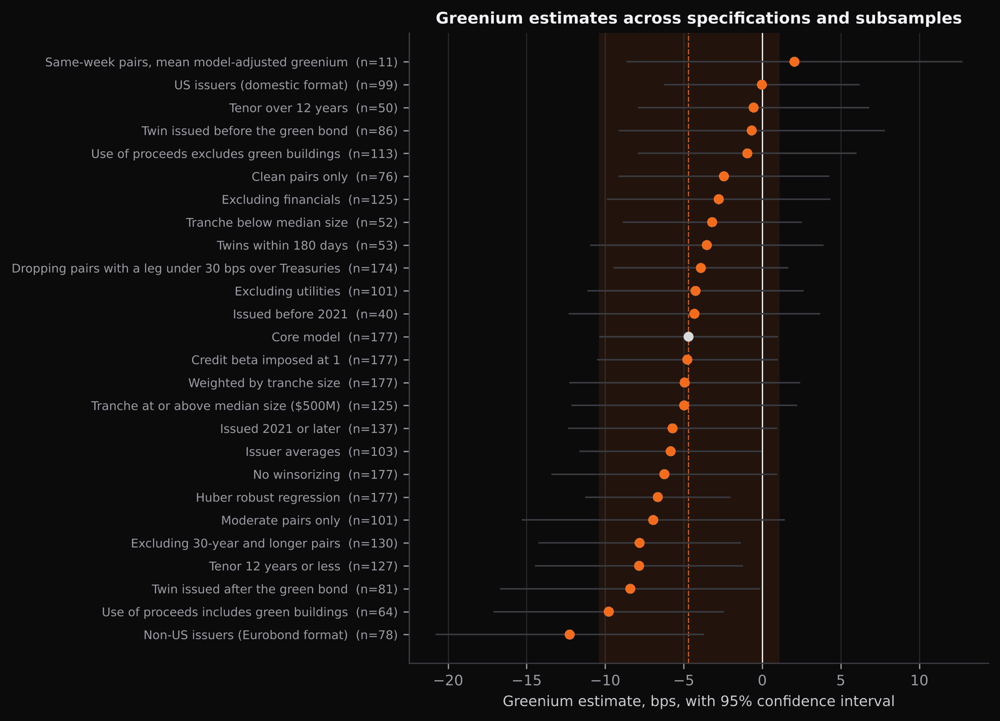
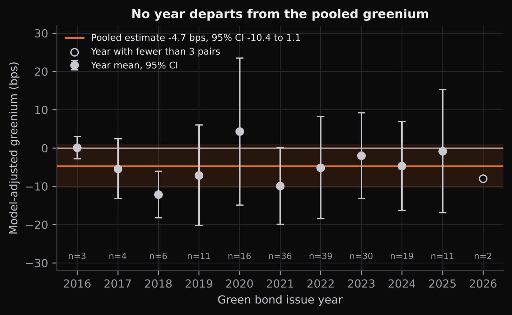
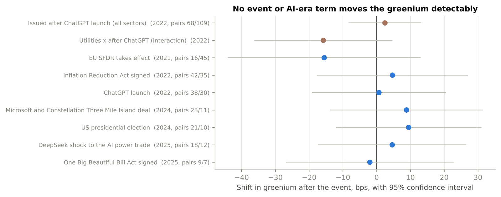
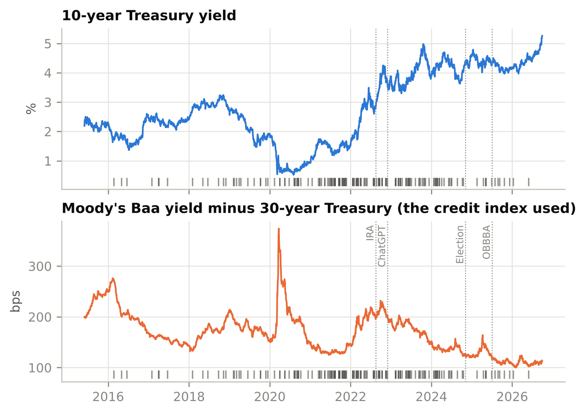

Green bond pricing research.

Do investors accept a lower yield on a green bond than on a conventional bond from the same issuer?
The question, the method, the finding, and what it means
- The question
- Is the greenium real, and is it big enough to change what an issuer should do?
- Data and method
- I started with 663 green bonds from Bloomberg and the Climate Bonds Initiative and narrowed them to 153 same issuer pairs under four pairing rules. Each pair is adjusted for Treasury rates, credit spreads and maturity using FRED data.
- What I found
- Green bonds priced 2.4 bps tighter on average. The result is not statistically significant, with a p value of 0.30, and the sample cannot distinguish 2 bps from zero. The two sovereigns that issue true twin bonds report a similar result, and Germany's March 2026 green Bund priced 1 bp through its twin.
- What it means
- On a $500 million 10 year deal, 2.4 bps is about $120,000 a year of coupon, which is less than the cost of the second party opinion and the reporting. On this evidence, the case for issuing a green bond rests on investor demand more than on a lower cost of funding.
Matched pairs, adjusted for rates, credit and maturity
The dataset holds 663 green bonds, of which 153 have a conventional bond from the same issuer that passes four pairing rules. The twin must be denominated in US dollars and hold the same payment rank, both bonds must be at least $250 million, and neither may be callable before 90 percent of its life. Each pair is dated at its Bloomberg pricing date and adjusted for rates, credit spreads and maturity with Treasury and Moody's data from FRED. Matches were first screened with help from Claude. Every number here is preliminary.
A small gap that the data cannot pin down
The average gap by which green bonds priced tighter than their matched conventional bonds, across 153 pairs from 88 issuers. The result is not statistically significant, with a p value of 0.30, and the 95 percent interval runs from 7.1 bps tighter to 2.2 bps wider.
The range across other estimators and sample choices. The median pair is 4.3 bps tighter and the outlier robust estimators give 3.5 to 4.5, while adding back the pairs I had excluded reduces the average to 1.2 or less. The data do not support a narrower range.
The average for the 10 pairs sold within a week of each other. The closest matches show no discount, although 10 pairs are too few to draw a firm conclusion.
A test of whether the gap was the same across four periods from 2016 to 2026, which found no detectable change. After the ChatGPT launch the gap was 2.5 bps smaller, with a p value of 0.61, which is not significant.
The smallest true gap this sample can detect reliably. A gap of 8 bps or more is rejected, and distinguishing 5 bps from zero would require about 265 pairs. Tests for a shift over time can only detect changes of roughly 27 bps.
Unique green bonds after cleaning 1,226 tracker rows. They come from 291 parent issuers in 40 countries, represent about $386 billion of face value and were issued between April 2009 and May 2026. Of these, 270 have matured.
On a $500 million, 10 year deal one basis point of coupon is worth about $50,000 a year, so 2.4 bps would be worth about $120,000 a year if the gap were real. The data do not establish that it is.
There is one pattern I cannot yet explain. Pairs in which the conventional bond was issued after the green bond show a gap 11.8 bps larger than pairs in which it was issued first, with a p value of 0.008. When the twin came first the average is 3.2 bps wider, and when it came after the average is 8.6 tighter. A symmetric model should show no difference, so this needs an explanation before the headline figure is relied upon.
How many pairs would it take
I have 153. Each new pair is a terminal session and a twin search.
My point estimate is 2.4 bps tighter.
Smallest gap this many pairs can detect at 80 percent power
Pairs needed to detect the gap you picked
The research in thirteen charts
One script builds every chart from the results files, so the page and the charts always agree. Click any chart to open it.

The dataset663 green bonds by issue year, with the 153 in the pricing sample in grey. Issuance peaked in 2021 and 2022. 
Why the credit adjustment mattersThe gap between each pair moves almost one for one with the change in credit spreads between the two issue dates. The slope is 0.97. Without this step, any greenium estimate mostly measures the credit cycle. 
Three steps from coupons to a greeniumThe raw coupon gap has a standard deviation of 104 bps. Taking out Treasury rates at each bond's own tenor cuts it to 64. Taking out credit, rates and tenor together cuts it to 27 and leaves a mean of 2.4 bps tighter. 
The estimate across 24 specificationsVersions that keep every pair land between 2 and 4 bps tighter. Subsamples scatter more: non US issuers sit at 7.5 tighter and the 10 same week pairs at 3.7 wider. The sample splits are exploratory. 
By sector and ratingFinancials show 5.1 bps tighter, p 0.20, on 36 pairs. Across the seven sector and rating groups none is significant, and after correcting for seven tests the smallest p value is 0.81. In the earlier version the financials result appeared meaningful, and it no longer does. 
By issue yearNo year departs from the pooled estimate. The confidence intervals are wide because no year holds more than 34 pairs. 
Seven dated eventsNone of them, from the EU disclosure rules to the DeepSeek shock, shifts the greenium detectably. The smallest raw p value is 0.08 and none survives correction. These tests can only see moves of roughly 27 bps. 
The market behind the sampleThe 10 year Treasury yield and the credit index used, Moody's Baa over the 30 year Treasury, with each pair's issue date marked as a tick. The pairs cluster from 2020 to 2023. 
How many pairs it would takeWith 153 pairs the smallest gap the test can reliably detect is 6.6 bps. Detecting 5 bps would take about 265 pairs and 3 bps about 735. The sample can reject a gap of 8 bps or more. It cannot distinguish 2 bps from zero. 
A test that does not depend on the model's assumptionsFlipping the sign of each issuer's gaps at random 20,000 times produces a mean at least as large as 2.4 bps about 31 percent of the time. 
The 153 gaps, and why the date gap mattersThe mean is 2.4 bps tighter and the median 4.3. Noise grows with the time between the two issue dates, from 20 bps within a week to 35 beyond two years. 
Mean versus robust estimatorsEstimators that ignore the outliers, the median and trimmed means, give 3.5 to 4.5 bps tighter. Adding back excluded pairs gives 0.2 to 1.2. A reasonable range is therefore about 0 to 5 bps. 
What the data say under different starting beliefsA sceptic who expects zero ends at 1.5 bps tighter. Someone who expects the larger discounts found in cross issuer studies ends at 3.4. Under either starting belief, the data point toward a small number.


What the issuers with real twins see
The cleanest measurements of the greenium come from sovereigns that sell a green bond and a conventional bond with the same coupon and maturity, so that the only difference between the two is the label. Germany's March 2026 green Bund, 4 billion euros at a 3.14 percent yield, priced 1 bp through its twin, and the Finanzagentur puts the year's greenium at about half a basis point. Denmark's central bank says its recent twins trade 0 to 1 bp apart, down from 2 to 4 a few years ago, with its newest 10 year coming 1.5 to 2 bp inside.
My corporate pairs give a similar answer with more noise, which is a gap in the low single digits that is shrinking and cannot be distinguished from zero on a single deal. Bankers at Crédit Agricole cite 5 bp or more on bank paper. My financials subsample shows 5.1 bps tighter on 36 pairs, which appears consistent with that view, although a p value of 0.20 means the result is not reliable.
Two results that did not hold up
The first was a 25 bps result that turned out to be an artifact. An early version showed the gap shrinking by 25 bps, which came from measuring credit spreads over the 10 year Treasury and therefore picking up the slope of the curve. Measured over the 30 year, the credit index tracks the ICE BofA investment grade index at a correlation of 0.95, compared with 0.40 before. I withdrew the claim.
The second was a dating error in my own file. In October 2026 I checked the largest residuals on the terminal and found that the file used settlement dates where pricing dates belonged. I pulled the Bloomberg pricing dates and applied the four pairing rules my supervisor adopted, which require a US dollar twin, the same payment rank, a minimum size of $250 million for both bonds and no early call. The average moved from 4.7 to 2.4 bps and the p value from 0.11 to 0.30. The rules were set after I had seen the earlier results, and the paper discloses that.
Three things that would change these numbers
- Verifying the largest residuals and 20 random pairs on the terminal, then rerunning with the confirmed set.
- Replacing coupons with offering yields and daily prices, which needs TRACE and Mergent FISD access.
- Finishing the twin search for the 164 live green bonds that still have no conventional match.
Where the numbers come from
Built from Bloomberg, Climate Bonds Initiative and FRED data. My supervisor approved publishing summary statistics in writing. No bond level data is shown. Last updated October 2026.